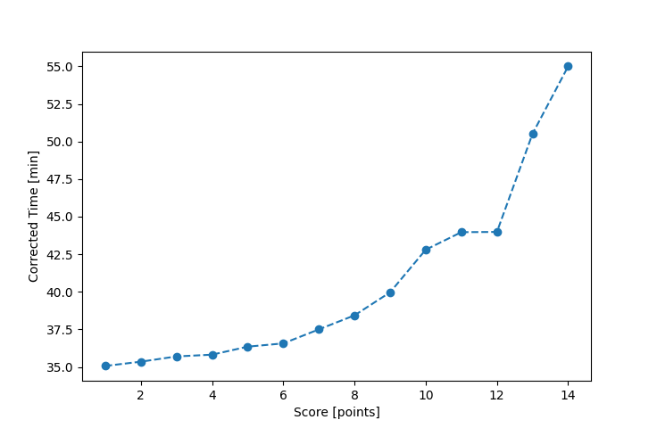

| Wind: | 2-3 (BFT) |
|---|---|
| RC: | John_TRalph_HBetsy_H |
| Date: | June 04, 2016 |
| Notes: | I2 270 |
| Rank / Score | Name | Boat | Input Time [mm:ss] | Input Offset [mm:ss] | Race Time [mm:ss] | Race Time [s] | Handicap | Corrected Time [s] | Corrected Time [mm:ss] |
|---|---|---|---|---|---|---|---|---|---|
| 1.0 | Ron_F | F5 | 33:52 | 00:00 | 33:52 | 2032 | 0.96600 | 2104 | 35:04 |
| 2.0 | Mike_F | SF | 35:29 | 00:00 | 35:29 | 2129 | 1.00400 | 2121 | 35:21 |
| 3.0 | David_Bu | SF | 35:51 | 00:00 | 35:51 | 2151 | 1.00400 | 2142 | 35:42 |
| 4.0 | Jack_A | SWSX | 34:21 | 00:00 | 34:21 | 2061 | 0.95900 | 2149 | 35:49 |
| 5.0 | Rod_H | PUF | 40:38 | 00:00 | 40:38 | 2438 | 1.11800 | 2181 | 36:21 |
| 6.0 | Bill_P | SF | 36:43 | 00:00 | 36:43 | 2203 | 1.00400 | 2194 | 36:34 |
| 7.0 | Nedra_F | SF | 37:39 | 00:00 | 37:39 | 2259 | 1.00400 | 2250 | 37:30 |
| 8.0 | Pat_B | WF | 35:15 | 00:00 | 35:15 | 2115 | 0.91700 | 2306 | 38:26 |
| 9.0 | Chris_E | SF | 40:08 | 00:00 | 40:08 | 2408 | 1.00400 | 2398 | 39:58 |
| 10.0 | Sara_M | SWSX | 41:03 | 00:00 | 41:03 | 2463 | 0.95900 | 2568 | 42:48 |
| 11.0 | Barry_O | HLR14 | 49:07 | 00:00 | 49:07 | 2947 | 1.11700 | 2638 | 43:58 |
| 12.0 | Stacy_O | SWSX | 42:11 | 00:00 | 42:11 | 2531 | 0.95900 | 2639 | 43:59 |
| 13.0 | Michael_L | BNSH | 47:44 | 00:00 | 47:44 | 2864 | 0.94500 | 3031 | 50:31 |
| 14.0 | Lewis_V | BCN | 47:51 | 00:00 | 47:51 | 2871 | 0.87000 | 3300 | 55:00 |

Application Notes:
All race results are unofficial
View source code at https://github.com/cessnao3/portsmouthracecalc/